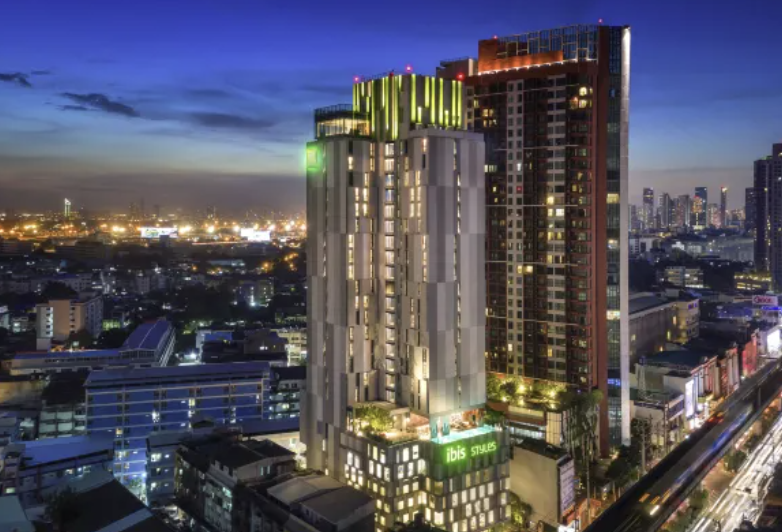
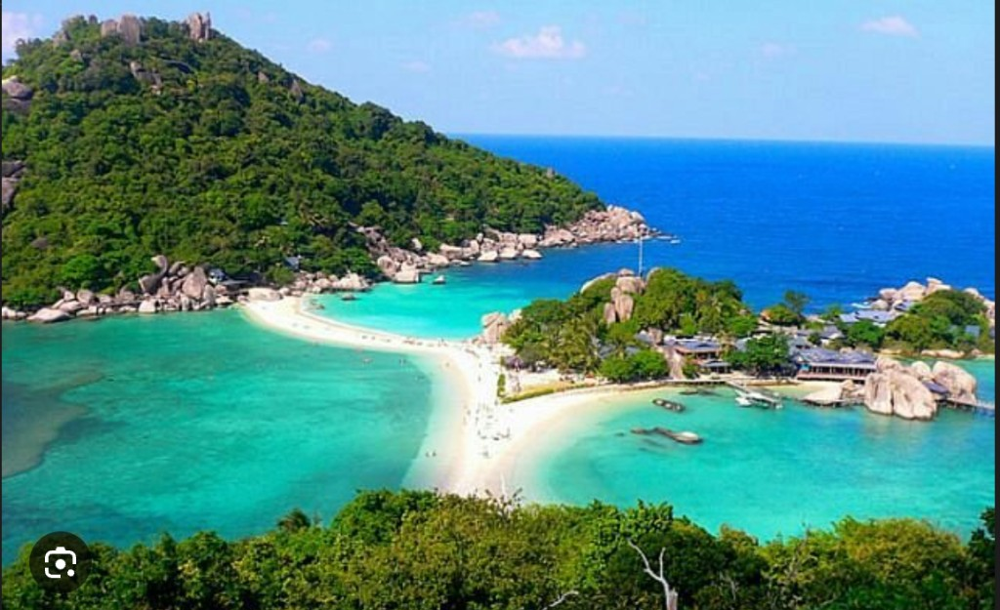
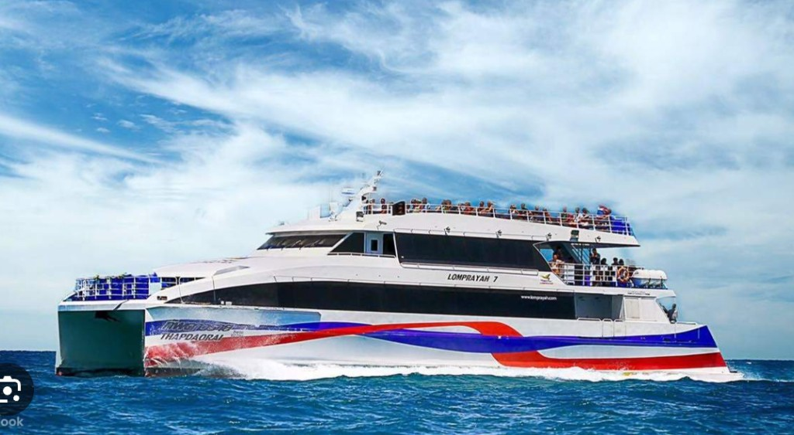
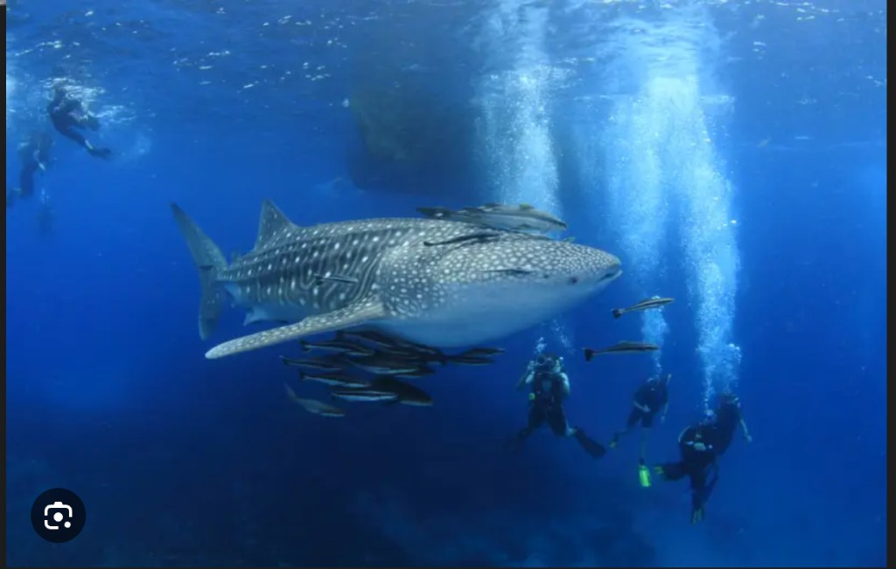
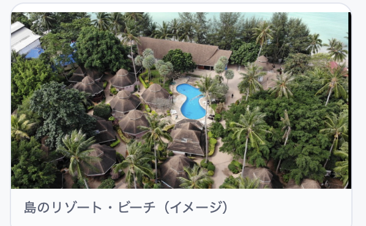
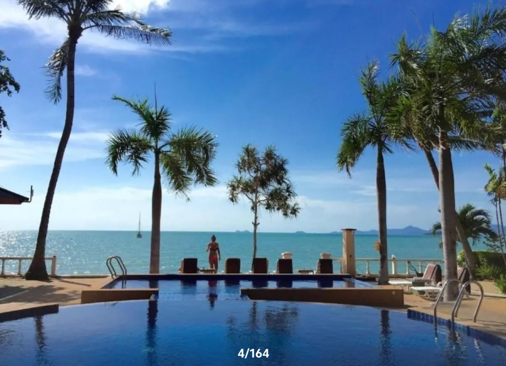
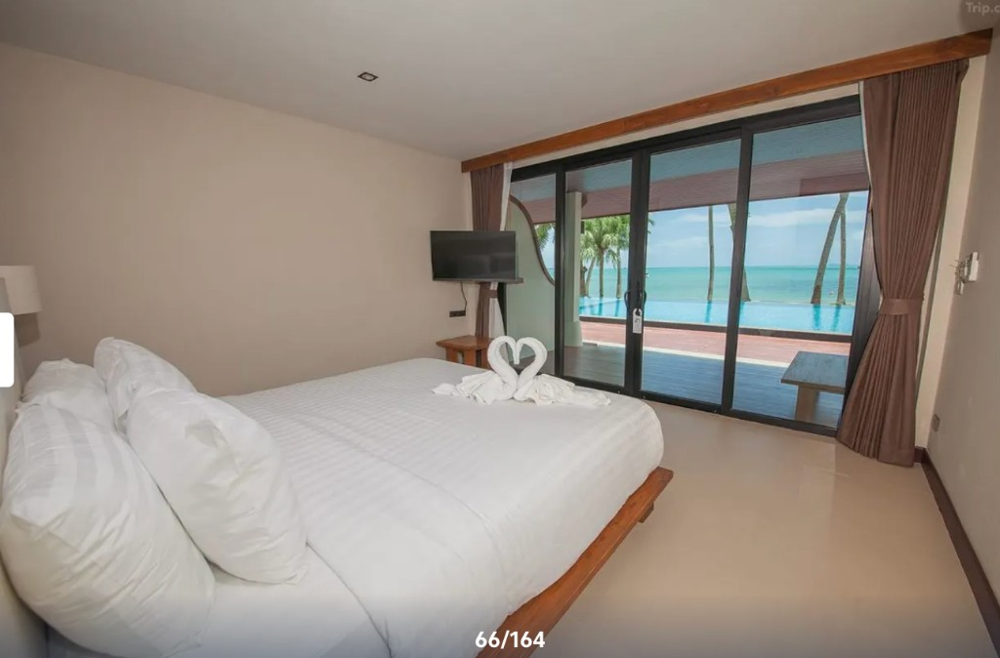

2026年4月1日〜5日 · 社員旅行スケジュール
国際線でバンコク入り · ホテル泊（バンコクはこの日のみ）
チェックイン 14:00以降 · チェックアウト 4月2日（木）12:00まで
この旅行でのバンコク滞在は4月1日のみです。到着後・チェックインのほかにやりたいことがあれば、可能な限りスケジュールに組みます。
寺院・カオサン・ショッピング・ムエタイなど、行きたい場所・やりたいことがあれば教えてください。（まだ決まっていなくても大丈夫です）
バンコクのおすすめ（参考）
バンコク · ワット・アルン（夜景）

初日宿泊 · イビス スタイルズ（ホテル外観イメージ）
飛行機 · 車 · フェリー · ホテル（移動が最も多い日）
基本的に、マイケルが案内できます。
メナム（サムイ島）12:30 発 → メーハード（タオ島）14:15 着 · 予約番号 A868558

コナン・ヤーン（タオ島周辺のイメージ）

Lomprayah 高速フェリー（イメージ）
終日タオ島 · ゆったり島時間
終日 タオ島滞在
午後にダイビングができるか問い合わせ中です。決まり次第共有します。

ダイビング・海のイメージ（午後は確認中）

宿泊先 · コタオ コーラル グランド リゾート（外観・敷地）
14:00チェックアウト · フェリーでサムイ島へ
チェックイン 14:00以降 · チェックアウト 4月5日（日）12:00まで

タオ島最終日 · コタオ コーラル グランド リゾート（プール・海）

サムイ島 · サムイ マーメイド リゾート（客室）
朝便 · ドンムアン乗り継ぎ · 関空帰国
共有用 · 集合・出発時刻を最優先に
ダイビング・機内持ち込み・タイの法令に注意
→ 宿に一応あります（念のためご自身でも確認ください）。
※各宿で未確認ですが、風量がやや弱い可能性があります。気になる方はご自身の持参も検討ください。
→ 水着、サンダル
船酔いが心配なら、酔い止めを検討してください。
TDAC - Thailand Digital Arrival Card（紙の到着カードの代替 · 入国前オンライン登録）
画面上は縦スクロールで全9枚を順に確認できます（1枚目は目次）。印刷は「横向き」でPDF保存可能です（1枚1ページ）。